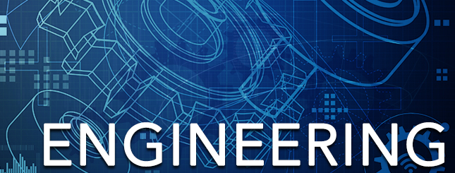

Career Options in M.tech.
Why do M.Tech?
Educational qualifications play a very important role in one’s life in gaining success. Of course, technical skills matter a lot, but a candidate with higher academic qualification will be given preference.
While pursuing a higher degree, you will be exposed to the applications of engineering in day-to-day life a little more. You will be getting more insight into the subjects as you are already familiar with these topics learnt at the bachelor level.
This degree will also land you in a far more well-paid job getting which is quite hard on the basis of your B.Tech degree. Whether it is private company or government organization, candidate with a higher degree is considered more competent for the job.
M.Tech Admissions at a glance: Top PG Engineering Entrance Exams
- GATE
GATE (Graduate Aptitude Test in Engineering) is an all India examination that primarily tests the comprehensive understanding of various UG subjects in Engineering and Technology of the applicants. Many Public Sector Undertakings (PSUs) are increasingly conducting their recruitment through GATE. GATE qualified candidates get highly paid jobs in PSUs like NHPC Limited, NTPC Limited, GAIL, Indian Oil, etc.
GATE qualified students get admissions in prestigious IITs. Along with that, many reputed engineering institutes provide admissions to M.Tech programmes on the basis of candidates’ GATE scores. So, this entrance exam is a must for every candidate, who wants to go for postgraduate engineering degree.
- IIITH PGEE-
International Institute of Information Technology, Hyderabad (IIITH) conducts IIITH Post Graduate Entrance Examination (IIITH PGEE) for providing admission to various M.Tech, PG Diploma and Ph.D programmes at the institute.
- CUCET-
Central Universities Common Entrance Test (CUCET) is conducted by Central University of Rajasthan for admissions to the M.Tech programmes at the Central Universities of Rajasthan and Jharkhand.
- IIIT Bhubaneswar M.Tech Entrance Exam-
International Institute of Information Technology, Bhubaneswar PG Entrance Exam is conducted by IIIT Bhubaneswar for admission to its Masters programmes in Computer Science and Engineering (CSE). Candidates possessing valid GATE (CS/IT) score of more than 75 percentile are exempted from this entrance test.
- IIIT Delhi M.Tech Entrance Exam-
Indraprastha Institute of Information Technology, Delhi (IIITD) PG Entrance Exam (IIIT Delhi PGEE) is for aspirants, who wish to take admissions in full time M.Tech courses (CSE and ECE) at this engineering institute. Candidates with a high GATE score can avail direct admissions (Maximum of 10 seats per specialization).
Top Engineering Institutes for studying M.Tech
For masters degree also, the most sought-after engineering institutes are IIT (Indian Institutes of Technology). IIITs (Indian Institute of Information Technology) and NITs (National Institute of Technology) are also among preferred engineering institutes in India for studying M.Tech. Some of the premium engineering institutes are-
- IIT Bombay
- IIT Kanpur
- IIT Madras
- IIT Roorkee
- IIT Bhubaneshwar
- IIT Gandhinagar
- IIT Hyderabad
- ISM Dhanbad
Opportunities after completing M.Tech
If you have decided to opt for a master degree, then you should also be aware of the opportunities you will be getting after completing it.
- Secure a reputed job:
If you want to do a highly respectable and highly paid job, where you have more control in the decision making process, then having a masters degree will make you enough competent when it comes to your job. For getting job in well-known companies like Microsoft or Google, one has to be highly skilful and expert to be able to compete with the top students. Having a bachelor degree and experience in smaller companies will take so many years in securing an authoritative position in a big company. After doing masters in engineering, your chances of getting higher positions in a short time are increased in India as well as abroad.